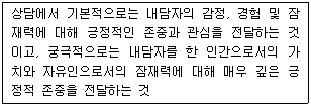
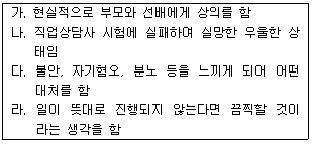
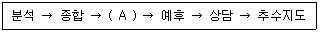
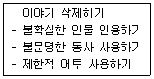
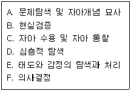
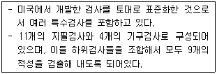
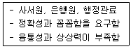
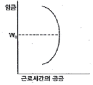
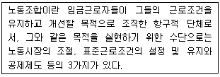
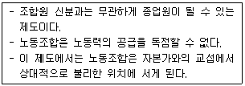

직업상담사-2급 (2015-03-08 기출문제)
1과목: 직업상담학
1. 상담과 관련된 설명으로 옳은 것은?
- 즉시성(Immediacy)이란 내담자의 질문에 즉각적으로 반응하는 것을 의미한다.
- 내담자에게 피드백(Feedback)을 줄 때는 일반적으로 부정적인 것부터 주는 것이 좋다.
- 상담을 진행하면서 시간, 내담자의 행동 및 절차상의 제한, 상담목표 등에 대해 논의하는 것을 구조화(Structuring)라고 한다.
- 짧은 시간에 구체적인 정보를 많이 수집하려고 할 때는 폐쇄형 질문(Closed Question)보다 개방형 질문(Open Question)이 효과적이다.
(정답률: 74%)

2. 미국의 국립직업지도협회(National Vocational Guidance Association)에서 제시한, 직업상담자에게 요구되는 6가지 기술영역에 해당되지 않는 것은?
- 관리능력
- 실행능력
- 조언능력
- 타협능력
(정답률: 70%)
3. 다음에서 설명하고 있는 것은?

- 공감
- 반영적 경청
- 내용의 재진술
- 수용적 존중
(정답률: 66%)
4. 프로이트(Freud)의 정신분석과 아들러(Adler)의 개인심리학의 특징을 순서대로 나열한 것으로 가장 적합한 것은?
- 생물학적 토대 – 사회심리학적 토대
- 목적론 강조 – 인과론 강조
- 총제주의 - 환원주의
- 꿈의 분석 – 각본(Script) 분석
(정답률: 72%)
5. 보딘(Bordin)의 정신역동적 직업상담 모형에서 제시하고 있는 진단분류가 아닌 것은?
- 자아갈등
- 직업선택에 대한 불안
- 의존성
- 비현실성
(정답률: 74%)
6. REBT 상담의 ABCDE원리에 비추어 볼 때 <보기>에서 “B”에 해당하는 것은?

- 가
- 나
- 다
- 라
(정답률: 70%)
7. 상담이론과 심리적 문제의 의미가 잘못 짝지어진 것은?
- 정신분석적 접근 – 무의식적 충동에 대처하기 위한 증상 형성
- 내담자 중심접근 – 자기와 경험의 불일치
- 행동주의적 접근 – 충동적인 욕구에 의한 부적응적인 행동
- 인지적 접근 – 비합리적이고 부적응적인 사고 방식
(정답률: 59%)
8. 행동주의적 접근의 상담기법 중 공포와 불안이 원인이 되는 부적응 행동이나 회피행동을 치료하는 데 가장 효과적인 기법은?
- 타임아웃 기법
- 모델링 기법
- 체계적 둔감법
- 행동조성법
(정답률: 83%)
9. 상담 초기과정의 활동으로 가장 거리가 먼 것은?
- 상담의 목표를 설정한다.
- 내담자와 라포(Rapport)를 형성한다.
- 내담자의 심리상태를 평가한다.
- 내담자의 문제행동에 대한 대안을 찾아본다.
(정답률: 77%)
10. 직업상담 과정에서 내담자와 상담자 간의 관계형성에 도움을 줄 수 있는 조건과 가장 거리가 먼 것은?
- 공감적 이해
- 무조건적 수용
- 친화감 형성
- 내담자 문제 분석
(정답률: 83%)
11. 게슈탈트 상담에서 인간의 분노, 격분, 증오, 고통, 불안, 슬픔, 죄의식, 포기 등과 같은 표되지 못한 감정을 포함하는 개념은?
- 미해결 과제
- 미성숙 과제
- 정서결핍 과제
- 구조적 과제
(정답률: 75%)
12. 윌리암슨(Williamson)이 구분한 특성-요인 진로상담과정 중 (A)에 해당하는 것은?

- 진 단
- 계획의 수행
- 설 명
- 정보제공
(정답률: 89%)
13. 내담자의 정보를 수집하고 행동을 이해하고 해석할 때 내담자가 다음과 같은 반응을 보일 경우 사용하는 상담기법은?

- 전이된 오류 정정하기
- 분류 및 재구성하기
- 왜곡된 사고 확인하기
- 저항감 재인식하기
(정답률: 70%)
14. 진로상담의 주요 원리와 가장 거리가 먼 것은?
- 진로상담은 진학과 직업선택, 직업적응에 초점을 맞추어 전개되어야 한다.
- 진로상담은 상담자와 내담자 간의 라포(Rapport)가 형성된 관계 속에서 이루어져야 한다.
- 진로상담은 항상 집단적인 진단과 처치의 자세를 견지해야 한다.
- 진로상담은 상담윤리강령에 따라 전개되어야 한다.
(정답률: 85%)
15. 수퍼(Super)가 제시한 발달적 직업상담단계를 바르게 나열한 것은?

- A → B → C → D → E → F
- A → D → C → B → E → F
- A → C → B → D → E → F
- A → B → D → C → E → F
(정답률: 82%)
16. 생애진로사정(Life Career Assessment)에 관한 설명으로 옳은 것은?
- 직업상담에서 생애진로사정은 초기단계보다는 중 · 말기 단계 면접법에서 사용된다.
- 생애진로사정은 아들러(Adler)의 개인심리학에 부분적으로 기초를 둔다.
- 생애진로사정은 객관적인 사실 확인에 중점을 둔다.
- 생애진로사정에서 여가생활, 친구관계 등과 같이 일(Work) 과 직접적으로 관련이 없는 주제는 제외된다.
(정답률: 80%)
17. 레벤슨(Levenson)이 제시한 직업상담사의 반윤리적 행동에 해당하는 것은?
- 상담사의 능력 내에서 내담자의 문제를 다룬다.
- 내담자에게 부당한 광고를 하지 않는다.
- 적절한 상담비용을 청구한다.
- 직업상담사에 대한 내담자의 의존성을 최대화 한다.
(정답률: 82%)
18. 인간중심 상담이론에서 상담자의 역할로 가장 거리가 먼 것은?
- 조력관계를 통해 성장을 촉진한다.
- 내담자 문제를 진단하여 분류한다.
- 내담자가 자신의 깊은 감정을 깨닫게 돕는다.
- 내담자로 하여금 존중받고 있음을 느끼게 한다.
(정답률: 73%)
19. 브레이필드(Brayfield)가 직업상담에서 직업정보가 가지는 3가지 기능으로 지적한 것이 아닌 것은?
- 정보적 기능
- 설득적 기능
- 재조정 기능
- 동기화 기능
(정답률: 78%)
20. 상담자와 내담자가 처음 만났을 때 사용해 볼 수 있는 구조화된 면접기법으로 내담자의 정보와 행동을 이해하는 데 도움을 주는 것은?
- 생애진로사정
- 직업지도프로그램
- 직무분석
- 긴장완화프로그램
(정답률: 83%)
2과목: 직업심리학
21. 다음에서 설명하고 있는 검사는?

- GATB 검사
- MBTI 검사
- 직업선호도 검사
- MMPI 검사
(정답률: 74%)
22. 오차변량의 원인을 특정 문항의 표집에 기인한 것으로 가정하는 신뢰도 계수는?
- 검사-재검사 신뢰도 계수
- 반분신뢰도 계수
- 동형검사 신뢰도 계수
- 크론바하 알파계수
(정답률: 50%)
23. 심리검사를 실시할 때 지켜야 할 사항과 가장 거리가 먼 것은?
- 검사의 구두 지시사항을 미리 충분히 암기한다.
- 지나친 소음과 방해자극이 없는 곳에서 검사를 실시한다.
- 수검자에 대한 관심과 협조, 격려를 통해 수검자로 하여금 검사를 성실히 하도록 한다.
- 수검자에게 검사결과를 통보할 때는 일상적인 용어보다 통계적인 숫자나 용어를 중심으로 전달하여야 한다.
(정답률: 80%)
24. 경력개발단계 중 일의 세계에서 개인 역할로 초점을 옮겨가는 시기로 역할들의 균형이 중요한 것은?
- 경력초기 단계
- 경력중기 단계
- 입사 단계
- 경력후기 단계
(정답률: 69%)
25. 진로선택 사회학습이론에 관한 설명으로 틀린 것은?
- 유전적 요인과 특별한 능력이 진로결정 과정에서 미치는 영향을 고려하지 않았다.
- 진로선택 결정에 영향을 미치는 삶의 사건들에 관심을 두고 있다.
- 전체 인생에서 각 개인의 독특한 학습 경험이 진로선택을 이끄는 주요한 영향요인을 발달시킨다고 보았다.
- 개인의 신념과 일반화는 사회학습 모형에서 매우 중요하다고 보았다.
(정답률: 73%)
26. 직무수행 관련 성격 5요인(Big 5) 모델의 요인이 아닌 것은?
- 외향성
- 친화성
- 성실성
- 지배성
(정답률: 73%)
27. 직업적응이론을 제시한 학자는?
- Tuckman
- R. Dawis와 L.Lofquist
- R. Gibson과 M. Mitchell
- J.Krumboltz와 L. Michel
(정답률: 73%)
28. 조직에서 자신이 생각하는 역할과 상급자가 생각하는 역할 간 차이에 기인한 스트레스원은?
- 역할과다
- 역할모호성
- 역할갈등
- 과제곤란도
(정답률: 75%)
29. 작업자 중심 직무분석의 특징과 가장 거리가 먼 것은?
- 표준화된 분석도구의 개발이 어렵다.
- 직무들에서 요구되는 인간특성의 유사정도를 양적으로 비교할 수 있다.
- 대표적인 예로서 직위분석질문지(PAQ)가 있다.
- 과제 중심 직무분석에 비해 보다 폭넓게 활용될 수 있다.
(정답률: 64%)
30. Holland의 작업분류에 관한 설명과 가장 거리가 먼 것은?
- 개인의 직업선택은 타고난 유전적 소질과 문화적 요인 간 상호작용의 산물이다.
- 직업적응 방식을 6가지 종류로 구분하고 직업환경을 3가지 차원으로 구분한다.
- 어떤 직업을 수용 혹은 거부할 것인지 자기와 계속 비교해보는 것이 진로선택에서 중요하다.
- 관습형은 탐구형보다 현실형과 공통점을 더 많이 가지고 있다.
(정답률: 67%)
31. Holland의 직업적응 매칭(Matching)이론에서 다음과 같은 유형의 직업세계에 가장 적합한 성격유형은?

- 사회적 유형
- 현실적 유형
- 탐구적 유형
- 관습적 유형
(정답률: 80%)
32. 어떤 사람의 심리검사 점수가 다른 사람과 비교하여 어느 위치에 있는지 알기 위해서 일반적으로 T점수로 변환하는데, 이러한 T점수의 평균과 표준편차는?
- 평균 0, 표준편차 1
- 평균 50, 표준편차 10
- 평균 10, 표준편차 5
- 평균 100, 표준편차 50
(정답률: 74%)
33. A형 성격유형에 대한 설명과 가장 거리가 먼 것은?
- 시간의 절박감과 경쟁적 성취욕이 강하다.
- 관상동맥성 심장병(CHD)에 걸릴 확률이 높다.
- 비경쟁적 상황에서는 타인과의 경쟁심이나 적대감이 의외로 없다.
- 직무스트레스의 주요 원천이다.
(정답률: 79%)
34. 직무를 성공적으로 수행하는 데 중요한 역할을 하는 행동들을 밝히기 위한 직무분석의 한 방법은?
- 관찰법
- 면접법
- 설문조사법
- 중요사건법
(정답률: 75%)
35. 다운사이징(Downsizing)과 조직구조의 수평화로 대변하는 조직변화에 적합한 종업원 경력개발 프로그램과 가장 거리가 먼 것은?
- 직무를 통해서 다양한 능력을 본인 스스로 학습할 수 있도록 많은 프로젝트에 참여시킨다.
- 표준화된 작업규칙, 고정된 작업시간, 엄격한 직무기술을 강화한 학습 프로그램에 참여시킨다.
- 불가피하게 퇴직한 사람들을 위한 퇴직자 관리 프로그램을 운영한다.
- 새로운 직무를 수행하는 데 요구되는 능력 및 지식과 관련된 재교육을 실시한다.
(정답률: 64%)
36. Roe의 욕구이론에 관한 설명으로 옳은 것은?
- 심리적 에너지가 흥미를 결정하는 중요한 요소라고 본다.
- 청소년기 부모-자녀 간의 관계에서 생긴 욕구가 직업선택에 영향을 미친다는 이론이다.
- 부모의 사랑을 제대로 받지 못하고 거부적인 분위기에서 성장한 사람은 다른 사람들과 함께 하고 접촉하는 서비스 직종의 직업을 선호한다.
- 직업군을 10가지로 분류한다.
(정답률: 53%)
37. 직무 스트레스에 영향을 주는 요인에 관한 설명과 가장 거리가 먼 것은?
- B 성격유형의 사람들은 A 성격유형의 사람들보다 성취욕구와 포부수준이 더 높기 때문에 일로부터 스트레스를 느낄 가능성이 적다.
- 내적 통제자보다 외적 통제자들은 자신의 삶에서 중요한 사건들이 주로 타인이나 외부에 의해 결정된다고 보기 때문에 스트레스 영향력을 감소시키려는 노력을 하지 않는 편이다.
- 스트레스 자체를 없애기는 어렵기 때문에 스트레스 출처를 예측하는 것이 스트레스를 완화하는 데 중요한 역할을 한다.
- 사회적 지원은 스트레스 출처를 약화시키지만 스트레스 출처로부터 야기된 권태감, 직무 불만족 자체를 감소시키는 것은 아니다.
(정답률: 68%)
38. 신뢰도의 크기에 영향을 주는 요인에 대한 설명과 가장 거리가 먼 것은?
- 문항 수가 많을수록 신뢰도가 높게 나타날 가능성이 크다.
- 개인차가 클수록 신뢰도가 높게 나타날 가능성이 높다.
- 신뢰도 계산 방법에 따라 신뢰도의 크기가 달라질 가능성이 높다.
- 응답자 수가 많을수록 신뢰도가 높게 나타날 가능성이 높다.
(정답률: 42%)
39. Ginzberg가 제시한 진로발달 단계가 아닌 것은?
- 환상기
- 잠정기
- 현실기
- 노년기
(정답률: 84%)
40. 직업발달을 탐색-구체화-선택-명료화-순응-개혁-통합의 직업정체감 형성과정으로 설명한 학자는?
- Super
- Crites
- Tiedeman & O’Hara
- Gottfredson
(정답률: 61%)
3과목: 직업정보론
41. 내일배움카드(직업능력개발계좌제)에 관한 설명으로 틀린 것은?(관련 규정 개정전 문제로 기존 정답은 4번입니다. 여기서는 4번을 누르면 정답 처리 됩니다.)(오류 신고가 접수된 문제입니다. 반드시 정답과 해설을 확인하시기 바랍니다.)
- 계좌의 유효기간은 1년이다.
- 훈련비의 50~70%는 정부가 지원, 30~50%는 훈련생본인이 부담한다.
- 연간 매출액 8000만원 미만인 자영업자는 내일배움카드 신청대상자에 해당한다.
- 디자이너, 경호원, 비서 및 사무보조원은 자비부담률 조정 분야에 해당한다.
(정답률: 77%)
42. 취업자 400만명, 실업자 20만명, 비경제 활동인구가 200만명일 때 경제활동참가율은?
- 66.7%
- 67.7%
- 68.7%
- 69.7%
(정답률: 70%)
43. 한국직업사전(2012)의 작업강도 중 “가벼운 작업”의 의미는?
- 최고 40kg의 물건을 들어 올리는 정도
- 최고 8kg의 물건을 들어 올리고, 4kg 정도의 물건을 빈번히 들어 올리거나 운반하는 정도
- 최고 20kg의 물건을 들어 올리고, 10kg 정도의 물건을 빈번히 들어 올리거나 운반하는 정도
- 최고 40kg의 물건을 들어 올리고, 20kg 정도의 물건을 빈번히 들어 올리거나 운반하는 정도
(정답률: 77%)
44. 한국직업사전의 부가 직업정보에 해당하는 것은?
- 직업코드
- 수행직무
- 본 직업명칭
- 정규교육
(정답률: 59%)
45. 직업의 정규교육, 숙련기간, 직무기능 등의 직업정보를 제공하는 것은?
- 한국표준직업분류
- 한국직업전망
- 한국직업사전
- 한국표준산업분류
(정답률: 61%)
46. 한국표준직업분류(2007)의 대분류에서 제4직능 수준 혹은 제3직능 수준을 필요로 하는 것은?
- 관리자
- 사무 종사자
- 서비스 종사자
- 기능원 및 관련 기능 종사자
(정답률: 70%)
47. 한국표준산업분류(2008)에 관한 설명으로 틀린 것은?
- 산업 활동의 범위에서 영리적, 비영리적 활동 및 가정 내의 가사활동 등을 모두 포함한다.
- 한국표준산업분류는 통계목적 이외에도 일반행정 및 산업정책관련 법령에서 적용대상 산업 영역을 한정하는 기준으로 준용되고 있다.
- 산업분류는 산출물 투입물의 특성, 생산 활동의 일반적인 결합 형태와 같은 기준에 의하여 분류된다.
- 사업체 단위는 공장, 광상, 상점, 사무소 등으로 산업 활동과 지리적 장소의 양면에서 가장 동질성이 있는 통계단위이다.
(정답률: 71%)
48. 한국직업사전(2012)의 직무기능에 해당하지 않는 것은?
- 환 경
- 자 료
- 사 물
- 사 람
(정답률: 73%)
49. 한국표준산업분류(2008)에서 제시한 산업결정방법으로 사실과 거리가 먼 것은?
- 생산단위의 산업 활동은 그 생산단위가 수행하는 주된 산업 활동(판매 또는 제공되는 재화 및 서비스)의 종류에 따라 결정된다.
- 생산단위가 수행하는 주된 산업 활동에 따라 결정하는 것이 적합하지 않을 경우에는 그 해당 활동의 종업원 수 및 노동시간, 임금 및 급여액 또는 설비의 정도에 의하여 결정한다.
- 계절에 따라 정기적으로 산업을 달리하는 사업체의 경우에는 조사시점에서 경영하는 사업에서 산출액이 많았던 활동에 의하여 분류된다.
- 휴업 중 또는 자산을 청산중인 사업체의 산업은 영업 중 또는 청산을 시작하기 전의 산업 활동에 의하여 결정하며, 설립 중인 사업체는 개시하는 산업활동에 따라 결정한다.
(정답률: 64%)
50. 실기능력이 중요하여 고용노동부령이 정하는 필기시험이 면제되는 기능사 종목이 아닌 것은?
- 정보처리기능사
- 도화기능사
- 도배기능사
- 방수기능사
(정답률: 74%)
51. 다음 중 비경제활동인구에 해당하는 것은?
- 수입목적으로 1시간 일한 자
- 일시휴직자
- 신규실업자
- 전업학생
(정답률: 73%)
52. 워크넷 채용정보검색에서 기업형태별 분류에 해당하지 않는 것은?(오류 신고가 접수된 문제입니다. 반드시 정답과 해설을 확인하시기 바랍니다.)
- 강소기업
- 외국계기업
- 일학습병행기업
- 중견기업
(정답률: 61%)
53. 한국표준산업분류(2008)의 분류 기준이 아닌 것은?
- 산출물의 특성
- 생산단위의 활동형태
- 투입물의 특성
- 생산활동의 일반적인 결합형태
(정답률: 60%)
54. 한 사람이 전혀 상관이 없는 두 가지 이상의 직업에 종사할 경우 그 사람의 직업을 결정하는 일반적 원칙이 아닌 것은?
- 취업시간이 많은 직업을 택한다.
- 수입이 많은 직업을 택한다.
- 경력이 많은 직업을 택한다.
- 최근의 직업을 택한다.
(정답률: 67%)
55. 한국직업사전(2012)의 부가정보 중 “자료”에 관한 설명으로 틀린 것은?
- 종합 – 사실을 발견하고 지식개념 또는 해석을 개발하기 위해 자료를 종합적으로 분석한다.
- 분석 – 조사하고 평가하며, 평가와 관련된 대안적 행위의 제시가 빈번하게 포함된다.
- 계산 – 사칙연산을 실시하고 사칙연산과 관련하여 규정된 활동을 수행하거나 보고한다. 수를 세는 것도 포함된다.
- 기록 – 데이터를 옮겨 적거나 입력하거나 표시한다.
(정답률: 69%)
56. 고용보험법상 고용안정 · 직업능력개발 사업에 관한 내용이 아닌 것은?
- 지역 고용의 촉진
- 공과금의 면제
- 고용안정 및 취업 촉진
- 고용촉진 시설에 대한 지원
(정답률: 72%)
57. 한국표준직업분류(2007)에서 다수 직업종사자의 분류원칙이 아닌 것은?
- 주된 직무 우선의 원칙
- 취업시간 우선의 원칙
- 수입 우선의 원칙
- 조사시 최근의 직업 원칙
(정답률: 60%)
58. 국가 직업훈련에 관한 정보를 검색할 수 있는 정보망은?
- JT-Net
- T-Net
- HRD-Net
- Training – Net
(정답률: 81%)
59. 국가기술자격 검정 중 기사 응시자격에 관한 설명으로 옳은 것은?
- 기능사 취득 후, 1년 이상 실무 종사자
- 관련학과 4년제 대학 졸업(예정)자
- 산업기사 수준의 노동부령으로 정하는 기술훈련과정 이수(예정)자
- 2년제 전문대학 관련학과 졸업자로 졸업 후 동일분야에서 1년 이상 실무에 종사한 자
(정답률: 59%)
60. 한국직업사전(2012)의 부가 직업정보 중 작업환경에 대한 설명으로 틀린 것은?
- 작업환경은 해당 직업의 직무를 수행하는 작업자에게 직접적으로 물리적, 신체적 영향을 미치는 작업장의 환경요인을 나타낸 것이다.
- 작업환경의 측정은 조사자가 느끼는 신체적 반응 및 작업자의 반응을 듣고 판단한다.
- 작업환경은 사업체의 규모와 특성에 따라 달라 질 수 있으나 동일사업체의 경우에는 작업장마다 절대적인 기준이 된다.
- 작업환경에는 저온, 고온, 다습, 소음 · 진동, 위험내재, 대기환경미흡 등이 있다.
(정답률: 68%)
4과목: 노동시장론
61. 노동조합의 형태 중 노동시장의 지배력과 조직으로서의 역량이 극히 약하다고 볼 수 있는 것은?
- 기업별 노동조합
- 산업별 노동조합
- 일반 노동조합
- 직업별 노동조합
(정답률: 56%)
62. 최저임금제가 노동시장에 미치는 효과와 가장 거리가 먼 것은?
- 잉여인력 발생
- 노동공급량 증가
- 숙련직의 임금하락
- 노동수요량 감소
(정답률: 60%)
63. 임금이 10,000원에서 12,000원으로 증가할 때 고용량이 120명에서 108명으로 감소한 경우 노동수요의 탄력성은?
- 0.06
- 0.5
- 1.0
- 2.0
(정답률: 53%)
64. 노동공급곡선이 그림과 같을 때 임금이 Wo 이상으로 상승한 경우에 설명으로 옳은 것은?

- 대체효과가 소득효과를 압도한다.
- 소득효과가 대체효과를 압도한다.
- 대체효과가 규모효과를 압도한다.
- 규모효과가 대체효과를 압도한다.
(정답률: 65%)
65. 다음에서 설명하는 학자는?

- S. Perlman
- L. Brentano
- F. Tannenbaum
- Sidney and Beatrice Webb
(정답률: 66%)
66. 개인이 노동시장에서의 노동공급을 포기하는 경우에 관한 설명으로 틀린 것은?
- 개인의 여가-소득 간의 무차별곡선이 수평에 가까운 경우이다.
- 개인의 여가-소득 간의 무차별곡선과 예산제약선 간의 접범이 존재하지 않거나, X축 코너(Cornet)점에서만 접점이 이루어질 경우이다.
- 일정수준의 효용을 유지하기 위해 1시간 추가소득이 시장임금률보다 더 큰 경우이다.
- 소득에 비해 여가의 효용이 매우 큰 경우이다.
(정답률: 42%)
67. 우리나라의 노동공급 추이에 관한 설명과 가장 거리가 먼 것은?
- 출산율이 저하되고 인구의 고령화가 진전된다.
- 선진국에 비하여 청년층의 경제활동참가율은 낮고 노년층의 경제활동참가율은 높다.
- 1980년대 중반 이후 노동시간의 감축이 나타난다.
- 우리나라의 연간실제노동시간은 제조업 중심국가인 일본보다 짧다.
(정답률: 68%)
68. 노동조합의 기능에 대한 설명으로 틀린 것은?
- 임금을 인상시키는 기능을 수행한다.
- 근로조건을 개선하는 기능을 한다.
- 각종 공제활동 및 복지활동을 할 수 있다.
- 특정 정당과 연계하여 정치적 영향력을 발위할 수 없다.
(정답률: 68%)
69. 연공급의 특징과 가장 거리가 먼 것은?
- 회사에 대한 높은 귀속의식
- 동일노동 · 동일임금의 실현
- 직무와 상관없는 비합리적인 인건비 지출
- 적당주의의 증가
(정답률: 65%)
70. 노동시장과 고용에 영향을 미치는 정보와 가장 거리가 먼 것은?
- 유망직종과 비인기 직종의 변화
- 기업회계제도의 변화
- 연령별 인구구조 변화
- 산업구조의 변화
(정답률: 67%)
71. 다음 중 실망노동력인구(Discouraged Labor Force)는 어디에 해당하는가?
- 취업자
- 실업자
- 경제활동인구
- 비경제활동인구
(정답률: 69%)
72. 근로자의 귀책사유 없이 기업의 가동률 저하로 인하여 근로자가 기업으로부터 떠나는 것으로 미국 등에서 잘 발달되어 있는 제도는?
- 사직(Quits)
- 해고(Discharges)
- 이직(Separations)
- 일시해고(Layoffs)
(정답률: 68%)
73. 불경기에 발생하는 부가노동자효과(Added Worker Effect)와 실망실업자효과률이 변화한다. 다음 중 실업률에 미치는 효과의 방향성이 옳은 것은? (단, + : 상승효과, - : 감소효과)
- 부가노동자효과 : +, 실망실업자효과 : -
- 부가노동자효과 : -, 실망실업자효과 : -
- 부가노동자효과 : +, 실망실업자효과 : +
- 부가노동자효과 : -, 실망실업자효과 : +
(정답률: 58%)
74. 산업별 노동조합의 특성과 가장 거리가 먼 것은?
- 기업별 특수성을 고려하기 어려워진다.
- 임시직, 일용직 근로자를 조직하기 용이해진다.
- 해당 산업분야의 정보자료 수집 · 분석이 용이해진다.
- 숙련공만의 이익옹호단체가 되기 쉽다.
(정답률: 48%)
75. 다음에서 설명하고 있는 숍(Shop)제도는?

- 오픈 숍(Open Shop) 제도
- 클로즈드 숍(Closed Shop) 제도
- 유니온 숍(Union Shop) 제도
- 에이전시 숍(Agency Shop) 제도
(정답률: 71%)
76. 임금격차 중 임금차별의 차원에서 개선이 필요한 것은?
- 성별 임금격차
- 학력별 임금격차
- 직종별 임금격차
- 기업규모별 임금격차
(정답률: 70%)
77. 최근 우리나라 기업에서 그 경향이 강화되고 있는 것은?
- 연봉제
- 종신고용제
- 연공서열제
- 호봉제
(정답률: 73%)
78. 필립스(Phillips, A. W) 곡선의 의미는?
- 실업률과 물가상승률 간의 상충관계
- 실업률과 성장률 간의 상충관계
- 실업률과 인구증가율 간의 상호관계
- 실업률과 사망률 간의 상호관계
(정답률: 73%)
79. 우리나라 여성의 연령별 경제활동참가율은 남성과 달리 자녀의 출산 · 육아기에 현저한 차이를 보인다. 이를 잘 설명할 수 있는 형태는?
- U자형
- 역U자형
- M자형
- W자형
(정답률: 62%)
80. 임금의 법적 성격에 관한 학설의 하나인 노동대가설로 설명할 수 있는 임금은?
- 직무수당
- 휴업수당
- 휴직수당
- 가족수당
(정답률: 67%)
5과목: 노동관계법규
81. 고용상 연령차별금지 및 고령자고용촉진에 관한 법률상 정년퇴직자의 재고용에 관한 설명으로 옳은 것은?
- 사업주는 정년에 도달한 자가 그 사업장에 다시 취업하기를 희망할 때 당사자의 희망 직종에 재고용하도록 하여야 한다.
- 사업주는 고령자인 정년퇴직자를 재고용할 때 당사자 간의 합의에 의하여 퇴직금 계산을 위한 계속근로기간을 산정할 때 종전의 근로기간을 제외할 수 있다.
- 당사자가 합의한다고 해도 연차유급 휴가일수 계산을 위한 계속근로기간 산정에 있어 종전의 근로기간을 제외할 수는 없다.
- 당사자 간 합의가 있다고 해도 임금의 결정 역시 종전과 달리할 수 없다.
(정답률: 60%)
82. 근로자직업능력개발법상의 재해 위로금을 받을 수 없는 자는?
- 수탁자의 귀책사유로 인하여 훈련생이 직업능력개발훈련 중 재해를 입은 경우
- 수탁자의 훈련시설의 하자에 의하여 훈련생이 직업능력개발훈련 중 재해를 입은 경우
- 산업재해보상보험법의 적용을 받는 훈련생이 훈련 중에 그 훈련으로 인하여 재해를 입은 경우
- 위탁에 의한 직업능력개발훈련을 받는 근로자가 위탁에 의한 훈련으로 인하여 재해를 입은 경우
(정답률: 64%)
83. 근로기준법상 임산부의 보호에 관한 설명으로 틀린 것은?
- 사용자는 임신 중의 여성에게 출산 전과 출산 후를 통하여 90일의 출산전후휴가를 주어야 한다.
- 사용자는 임신 중인 여성 근로자가 유산의 경험등의 사유로 휴가를 청구하는 경우 출산 전 어느 때라도 휴가를 나우어 사용할 수 있도록 하여야 한다.
- 인공 임신중절 수술에 따른 유산의 경우 근로자가 청구하면 유산 · 사산 휴가를 주어야 한다.
- 사용자는 임신 중의 여성 근로자에게 시간외근로를 하게 하여서는 아니 되며, 그 근로자의 요구가 있는 경우에는 쉬운 종류의 근로로 전환하여야 한다.
(정답률: 61%)
84. 남녀고용평등과 일 가정 양립 지원에 관한 법률상 사업주가 채용 또는 근로의 조건을 동일하게 적용하더라도 성차별이 발생할 수 있는 법적 요건에 해당하지 않는 것은?
- 당해 조건을 충족할 수 있는 남성 또는 여성이 다른 한 성에 비하여 현저히 적어야 한다.
- 특정 성에게 불리한 결과가 발생해야 한다.
- 채용 및 근로의 조건이 다른 성에 비하여 5분의 4에 미달하는 불리한 영향을 주어야 한다.
- 사업주가 제시한 기준이 정당한 것임을 입증할 수 없어야 한다.
(정답률: 52%)
85. 근로기준법상 근로시간에 관한 설명으로 틀린 것은?
- 1주간의 근로시간은 휴게시간을 제외하고 40시간을 초과할 수 없다.
- 1일의 근로시간은 휴게시간을 제외하고 8시간을 초과할 수 없다.
- 선택적 근로시간제 대상 근로자의 범위는 15세이상 18세 미만의 근로자이다.
- 당사자 간의 합의하면 1주간에 12시간을 한도로 근로시간을 연장할 수 있다.
(정답률: 68%)
86. 고용보험법의 적용이 제외되는 자가 아닌 것은?
- 65세 이후에 고용되거나 자영업을 개시한 자
- 국가공무원법에 의한 공무원
- 6개월 미만의 기간 동안 고용되는 근로자
- 별정우체국법에 의한 별정우체국 직원
(정답률: 54%)
87. 근로자직업능력개발법상 직업능력개발훈련을 실시하기 위하여 설치한 훈련전용시설이나 그 밖에 훈련을 실시하기에 적합한 시설에서 실시하는 훈련은?
- 향상훈련
- 전직훈련
- 집체훈련
- 통신훈련
(정답률: 69%)
88. 고용정책기본법상 한국고용정보원에 관한 설명으로 틀린 것은?
- 고용정보의 수집 제공과 직업에 관한 조사 연구 등에 따라 위탁받은 업무와 그 밖에 고용지원에 관한 업무를 효율적으로 수행하기 위하여 설립하였다.
- 한국고용정보원은 법인으로 한다.
- 고용노동부장관의 허가를 받아 분사무소를 둘 수 있다.
- 정부는 예산의 범위에서 한국고용정보원의 설립 · 운영에 필요한 경비를 출현할 수 있다.
(정답률: 52%)
89. 직업안정법상 신고를 하지 아니하고 무료직업소개사업을 할 수 있는 단체가 아닌 것은?
- 대한상공회의소
- 한국산업인력공단
- 한국장애인고용공단
- 교육관계법에 따른 각급 학교의 장
(정답률: 68%)
90. 근로기준법상 임금채권의 소멸시효 기간은?
- 1년
- 2년
- 3년
- 5년
(정답률: 75%)
91. 남녀고용평등과 일 가정 양립 지원에 관한 법률상 육아휴직에 관한 설명으로 옳은 것은?(관련 규정 개정전 문제로 여기서는 기존 정답인 4번을 누르면 정답 처리됩니다. 자세한 내용은 해설을 참고하세요.)
- 육아휴직의 기간은 2년 이내로 한다.
- 사업주는 사업을 계속할 수 없는 경우에도 육아 휴직 기간에는 그 근로자를 해고하지 못한다.
- 육아휴직 기간은 근속기간에 포함하지 않는다.
- 사업주는 휴직개시예정일의 전날까지 해당 사업에서 계속 근로한 기간이 1년 미만인 근로자에 대해서는 육아휴직을 허용하지 아니할 수 있다.
(정답률: 70%)
92. 고용상 연령차별금지 및 고령자고용촉진에 관한 법률에 관한 설명으로 옳은 것은?
- 고령자라 함은 60세 이상인 사람을 말한다.
- 준고령자라 함은 55세 이상 60세 미만인 사람을 말한다.
- 상시 300명 이상의 근로자를 사용하는 사업장의 사업주는 기준고용률 이상의 고령자를 고용하도록 노력하여야 한다.
- 기준고용률이란 사업장에서 상시 사용하는 근로자를 기준으로 하여 사업주가 고령자의 고용촉진을 위하여 고용하여야 할 고령자의 비율로서 업종 구분 없이 당해 사업장 상시 근로자수의 100분의 5를 말한다.
(정답률: 71%)
93. 근로자직업능력개발법상 사용하는 용어에 관한 설명으로 틀린 것은?
- 직업능력개발훈련이란 근로자에게 직업에 필요한 직무수행 능력을 습득 · 향상시키기 위하여 실시하는 훈련을 말한다.
- 근로자란 직업의 종류와 관계없이 임금을 목적으로 사업이나 사업장에 근로를 제공하는 자를 말한다.
- 직업능력개발사업이란 직업능력개발훈련, 직업능력개발훈련 과정 · 매체의 개발 및 직업능력개발에 관한 조사 · 연구 등을 하는 사업을 말한다.
- 지정직업훈련시설이란 직업능력개발훈련을 위하여 설립 설치된 직업전문학교 · 실용전문학교 등의 시설로서 고용노동부장관이 지정한 시설을 말한다.
(정답률: 63%)
94. 고용상 연령차별금지 및 고령자고용촉진에 관한 법률상 사업 종류별 고령자 고용 비율에 관한 설명으로 틀린 것은?
- 제조업 : 그 사업장의 상시근로자수의 100분의 2
- 운수업 : 그 사업장의 상시근로자수의 100분의 6
- 부동산업 : 그 사업장의 상시근로자수의 100분의 3
- 임대업 : 그 사업장의 상시근로자수의 100분의 6
(정답률: 71%)
95. 헌법상 노동기본권에 관한 설명으로 옳은 것은?
- 공무원인 근로자는 법률이 정하는 자에 한하여 단결권 단체교섭권 및 단체행동권을 가진다.
- 근로자는 근로자의 근로조건과 정치적 지위향상을 위하여 자주적인 단결권 단체교섭권 및 단체행동권을 가진다.
- 법률이 정하는 주요방위산업체에 종사하는 근로자의 단체교섭권은 법률이 정하는 바에 의하여 인정하지 않을 수 있다.
- 법률이 정하는 주요방위산업체에 종사하는 근로자의 단결권은 법률이 정하는 바에 의하여 제한할 수 있다.
(정답률: 59%)
96. 남녀고용평등과 일 가정 양립 지원에 관한 법률상 모집과 채용에서의 차별과 관련된 설명으로 틀린 것은?
- 직무의 성격에 비추어 특정 성이 불가피하게 요구되더라도 여성의 참여를 배제하는 것은 차별에 해당한다.
- 차별이란 사업주가 근로자에게 성별, 혼인, 가족 안에서의 지위, 임신 또는 출산 등의 사유로 합리적인 이유 없이 채용 또는 근로의 조건을 다르게 하거나 그 밖의 불리한 조치를 하는 경우를 말한다.
- 사업주가 채용조건이나 근로조건은 동일하게 적용하더라도 그 조건을 충족할 수 있는 남성 또는 여성이 다른 한 성에 비하여 현저히 적고 그에 따라 특정 성에게 불리한 결과를 초래하며 그 조건이 정당한 것임을 증명할 수 없는 경우 차별에 해당한다.
- 여성 근로자의 임신 출산 수유 등 모성보호를 위한 조치를 하는 경우 차별에 해당하지 않는다.
(정답률: 65%)
97. 직업안정법상 국내 근로자공급사업의 허가를 받을 수 있는 자는?
- “노동조합 및 노동관계조정법”에 따른 노동조합
- 국내에서 제조업 · 건설업을 행하고 있는 자
- 국내에서 용역업 · 기타서비스업을 행하고 있는 자
- 무료직업소개소를 운영하고 있는 자
(정답률: 51%)
98. 고용정책기본법상 국가가 고용정책을 수립 시행하는 경우 실현되도록 노력해야 할 기본원칙으로 틀린 것은?
- 근로자의 직업선택의 자유와 근로의 권리가 확보되도록 할 것
- 사업주의 자율적인 고용관리를 존중할 것
- 구직자의 자발적인 취업노력을 촉진할 것
- 고용정책은 중앙정부의 주도로 수립 · 시행할 것
(정답률: 66%)
99. 고용보험법상 고용보험에 해당하지 않는 것은?
- 재활사업
- 직업능력개발사업
- 실업급여
- 고용안정사업
(정답률: 53%)
100. 헌법상 노동3권과 관련이 있는 것은?
- 법률에 의해 최저임금제 보장
- 자주적인 단체교섭권의 보장
- 연소근로자 특별한 보호
- 국가유공자의 우선근로 기회부여
(정답률: 66%)